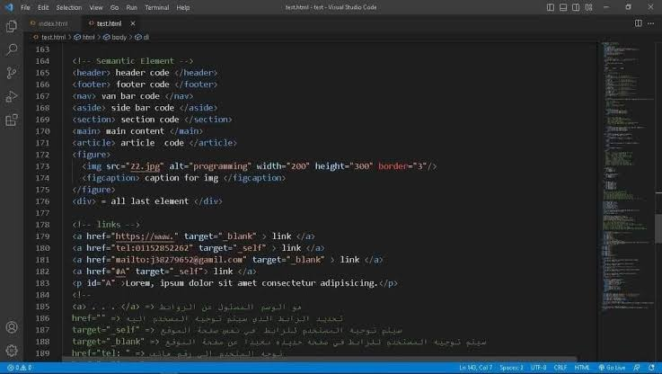

اسمي عبدالله لباد، طالب في الجامعة الافتراضية السورية في فرع الهندسة المعلوماتية في السنة الثالثة. أهدف إلى التخصص في هندسة البرمجيات، وأنا شغوف بتعلم برمجة المواقع. هدفي هو أن أصبح مطور مواقع محترف، وأنا متحمس لتعلم كل ما هو جديد في هذا المجال واكتساب خبرات عملية تؤهلني للدخول بقوة إلى سوق العمل. أحب البرمجة والتطوير، وأستمتع بحل المشكلات البرمجية، أؤمن بأهمية العمل الجماعي والتعاون مع الآخرين لتحقيق أفضل النتائج، أسعى دائمًا لتطوير مهاراتي واكتساب معرفة جديدة في مجال البرمجة وتكنولوجيا المعلومات. في أوقات فراغي، أحب قراءة المقالات التقنية ومتابعة أحدث التطورات في مجال البرمجة، كما أستمتع بالمشاركة في المشاريع المفتوحة المصدر والمساهمة في المجتمع التقني. أتطلع دائمًا إلى تحسين مهاراتي وتوسيع معرفتي في مجال البرمجة، وأتمنى أن أكون جزءًا من مشاريع مبتكرة ومثيرة في المستقبل.

